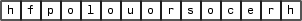
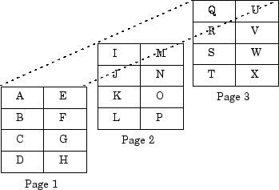

MATLAB Data
MATLAB Array in C/C++ Applications
The MATLAB® language works with a single object type: the MATLAB array. All MATLAB variables (including scalars, vectors, matrices, character arrays,
cell arrays, structures, and objects) are stored as MATLAB arrays. In C/C++, the MATLAB array is declared to be of type mxArray. The
mxArray structure contains the following information about
the array:
Its type
Its dimensions
The data associated with this array
If numeric, whether the variable is real or complex
If sparse, its indices and nonzero maximum elements
If a structure or an object, the number of fields and field names
To access the mxArray structure, use functions in the C or
Fortran Matrix APIs. These functions allow you to create, read, and query
information about the MATLAB data in your MEX files. Matrix APIs use the mwSize and mwIndex types to avoid
portability issues and allow MEX source files to be compiled correctly on all
systems.
Lifecycle of mxArray
Like MATLAB functions, a MEX-file gateway routine passes MATLAB variables by reference. However, these arguments are C pointers. A pointer to a variable is the address (location in memory) of the variable. MATLAB functions handle data storage for you automatically. When passing data to a MEX-file, you use pointers, which follow specific rules for accessing and manipulating variables. For information about working with pointers, refer to a programming reference, such as The C Programming Language by Kernighan, B. W., and D. M. Ritchie.
Note
Since variables use memory, you need to understand how your MEX-file creates
an mxArray and your responsibility for releasing (freeing)
the memory. This is important to prevent memory leaks. The lifecycle of an
mxArray—and the rules for managing
memory—depends on whether it is an input argument, output argument, or
local variable. The function you call to deallocate an
mxArray depends on the function you used to create it.
For more information, look up the functions to create arrays in the C Matrix API.
Input Argument prhs
An mxArray passed to a MEX-file through the
prhs input parameter exists outside the scope of the
MEX-file. Do not free memory for any mxArray in the
prhs parameter. Also, prhs variables
are read-only; do not modify them in your MEX-file.
Output Argument plhs
If you create an mxArray (allocate memory and create data)
for an output argument, the memory and data exist beyond the scope of the
MEX-file. Do not free memory on an mxArray returned in the
plhs output parameter.
Local Variable
You allocate memory whenever you use an mxCreate* function
to create an mxArray or when you call the
mxCalloc and associated functions. After observing the
rules for handling input and output arguments, the MEX-file should destroy
temporary arrays and free dynamically allocated memory. To deallocate memory,
use either mxDestroyArray or mxFree.
For information about which function to use, see MX Matrix Library.
Data Storage
MATLAB stores data in a column-major (column-wise) numbering scheme, which is how Fortran stores matrices. MATLAB uses this convention because it was originally written in Fortran. MATLAB internally stores data elements from the first column first, then data elements from the second column second, and so on, through the last column.
For example, given the matrix:
a = ['house'; 'floor'; 'porch']
a = house floor porch
its dimensions are:
size(a)
ans =
3 5and its data is stored as:

If a matrix is N-dimensional, MATLAB represents the data in N-major order. For example, consider a
three-dimensional array having dimensions
4-by-2-by-3. Although
you can visualize the data as:

MATLAB internally represents the data for this three-dimensional array in this order:
A | B | C | D | E | F | G | H | I | J | K | L | M | N | O | P | Q | R | S | T | U | V | W | X |
0 | 1 | 2 | 3 | 4 | 5 | 6 | 7 | 8 | 9 | 10 | 11 | 12 | 13 | 14 | 15 | 16 | 17 | 18 | 19 | 20 | 21 | 22 | 23 |
The mxCalcSingleSubscript function
creates the offset from the first element of an array to the desired element, using
N-dimensional subscripting.
MATLAB Data Types
Complex Double-Precision Matrices
The most common data type in MATLAB is the complex double-precision, nonsparse matrix. These matrices
are of type double and have dimensions
m-by-n, where m is
the number of rows and n is the number of columns. The data
is stored as a vector of interleaved, double-precision numbers where the real
and imaginary parts are stored next to each other. The pointer to this data is
referred to as pa (pointer to array). To test for a
noncomplex matrix, call mxIsComplex.
Before MATLAB Version 9.4 (R2018a), MATLAB used a separate storage
representation. The data is stored as two vectors of double-precision
numbers—one contains the real data and one contains the imaginary data.
The pointers to this data are referred to as pr (pointer to
real data) and pi (pointer to imaginary data), respectively.
A noncomplex matrix is one whose pi is
NULL. However, to test for a noncomplex matrix, call
mxIsComplex.
Other Numeric Matrices
MATLAB supports single-precision floating-point and 8-, 16-, 32-, and 64-bit integers, both signed and unsigned.
Logical Matrices
The logical data type represents a logical true or
false state using the numbers 1 and
0, respectively. Certain MATLAB functions and operators return logical 1 or
logical 0 to indicate whether a certain condition was found
to be true or not. For example, the statement (5 * 10) >
40 returns a logical 1 value.
MATLAB char Arrays
MATLAB
char arrays store data as unsigned 16-bit integers. To convert a
MATLAB
char array to a C-style string, call mxArrayToString. To convert
a C-style string to a char array, call mxCreateString.
Cell Arrays
Cell arrays are a collection of MATLAB arrays where each mxArray is referred to as a
cell. Cell arrays allow MATLAB arrays of different types to be stored together. Cell arrays are
stored in a similar manner to numeric matrices, except the data portion contains
a single vector of pointers to mxArrays. Members of this
vector are called cells. Each cell can be of any supported data type, even
another cell array.
Structures
A 1-by-1 structure is stored in the same
manner as a 1-by-n cell array where
n is the number of fields in the structure. Members of
the data vector are called fields. Each field is associated with a name stored
in the mxArray.
Objects
Objects are stored and accessed the same way as structures. In MATLAB, objects are named structures with registered methods. Outside MATLAB, an object is a structure that contains storage for an additional class name that identifies the name of the object.
Multidimensional Arrays
MATLAB arrays of any type can be multidimensional. A vector of integers is stored where each element is the size of the corresponding dimension. The storage method of the data is the same as for matrices.
Empty Arrays
MATLAB arrays of any type can be empty. An empty
mxArray is one with at least one dimension equal to zero.
For example, a double-precision mxArray of type
double, where m and
n equal 0 and pa is
NULL, is an empty array.
Sparse Matrices
Sparse matrices have a different storage convention from full matrices in
MATLAB. The parameter pa is still an array of
double-precision numbers or logical values, but this array contains only nonzero
data elements.
There are three additional parameters: nzmax,
ir, and jc. Use the mwSize and mwIndex types when declaring
variables for these parameters.
nzmaxis an integer that contains the length ofirandpa. It is the maximum number of nonzero elements in the sparse matrix.irpoints to an integer array of lengthnzmaxcontaining the row indices of the corresponding elements inpa.jcpoints to an integer array of lengthn+1, wherenis the number of columns in the sparse matrix. In C, the first element of anmxArrayhas an index of 0. Thejcarray contains column index information. If thejth column of the sparse matrix has any nonzero elements,jc[j]is the index intoirandpaof the first nonzero element in thejth column. Indexjc[j+1] - 1contains the last nonzero element in that column. For thejth column of the sparse matrix,jc[j]is the total number of nonzero elements in all preceding columns. The last element of thejcarray,jc[n], is equal tonnz, the number of nonzero elements in the entire sparse matrix. Ifnnzis less thannzmax, more nonzero entries can be inserted into the array without allocating more storage.
Do not try to reshape a sparse array using the
mxSetDimensions function.
Using Data Types
You can write source MEX files, MAT-file applications, and engine applications in
C/C++ that accept any class or data type supported by MATLAB (see Data Types). In Fortran, only
the creation of double-precision n-by-m arrays
and strings are supported. You use binary C/C++ and Fortran MEX files like
MATLAB functions.
Caution
MATLAB does not check the validity of MATLAB data structures created in C/C++ or Fortran using one of the
Matrix Library create functions (for example,
mxCreateStructArray). Using invalid syntax to create a
MATLAB data structure can result in unexpected behavior in your C/C++ or
Fortran program.
Declaring Data Structures
To handle MATLAB arrays, use type mxArray. The following
statement declares an mxArray named
myData:
mxArray *myData;
To define the values of myData, use one of the
mxCreate* functions. Some useful array creation routines
are mxCreateNumericArray,
mxCreateCellArray, and
mxCreateCharArray. For example, the following statement
allocates an m-by-1 floating-point
mxArray initialized to 0:
myData = mxCreateDoubleMatrix(m, 1, mxREAL);
C/C++ programmers should note that data in a MATLAB array is in column-major order. (For an illustration, see Data Storage.) Use the MATLAB
mxGet* array access routines to read data from an
mxArray.
Manipulating Data
The mxGet* array access routines get references to the data
in an mxArray. Use these routines to modify data in your MEX
file. Each function provides access to specific information in the
mxArray. Some useful functions are
mxGetDoubles, mxGetComplexDoubles,
mxGetM, and mxGetString. Many of
these functions have corresponding mxSet* routines to allow
you to modify values in the array.
The following statements read the input prhs[0] into a
C-style string buf.
char *buf; int buflen; int status; buflen = mxGetN(prhs[0])*sizeof(mxChar)+1; buf = mxMalloc(buflen); status = mxGetString(prhs[0], buf, buflen);
explore Example
There is an example source MEX file included with MATLAB, called explore.c, that identifies the data type of
an input variable. The source code for this example is in
matlabroot/extern/examples/mex,
where matlabroot represents the top-level folder
where MATLAB is installed on your system.
Note
In platform-independent discussions that refer to folder paths, this
documentation uses the UNIX® convention. For example, a general reference to the
mex folder is
matlabroot/extern/examples/mex.
To build the example MEX file, first copy the file to a writable folder on your path.
copyfile(fullfile(matlabroot,'extern','examples','mex','explore.c'),'.','f')
Use the mex command to build the MEX file.
mex explore.c -R2018a
Type:
x = 2; explore(x)
------------------------------------------------ Name: prhs[0] Dimensions: 1x1 Class Name: double ------------------------------------------------ (1,1) = 2
explore accepts any data type. Try using
explore with these examples:
explore([1 2 3 4 5]) explore 1 2 3 4 5 explore({1 2 3 4 5}) explore(int8([1 2 3 4 5])) explore {1 2 3 4 5} explore(sparse(eye(5))) explore(struct('name', 'Joe Jones', 'ext', 7332)) explore(1, 2, 3, 4, 5) explore(complex(3,4))